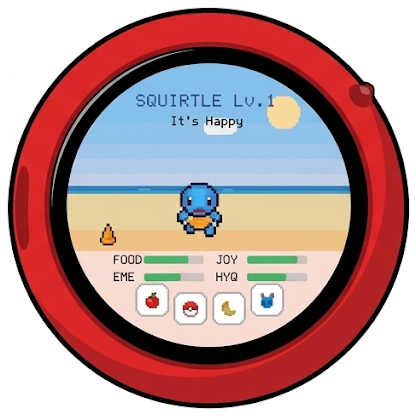

Your Pocket Pokémon!

Start here
Quick-start guide · firmware v
Hello, Trainer!
TamaPoke is a little creature that lives in your pocket. Feed it, play with it and watch it grow, in real time.
 →
→

Keep the memory card in! It holds all the creature pictures.
Your home screen
 1
2
3
4
1
2
3
4
Getting around
From the home screen, swipe in any direction:
To close a menu, just tap outside it.
Keeping it happy
Four bars show how your creature feels. They slowly go down all day, so check in often!
Good night! If you turn the screen off between midnight and 6 am, your creature goes to sleep. It wakes up when you turn the screen back on.
Watch it grow
Every story has an ending
Want to stop early? Retire (in the menu) only after its goodbye is ready, or your creature is gone for good.
Train, battle & collect
Get stronger
Take on the gyms


Catch 'em all
Need a hand?
Updates & more regions: open dylanpdao.github.io/TamaPoke/web in Chrome or Edge and plug in your TamaPoke.
Unofficial fan project. Not for sale. Not affiliated with or endorsed by Nintendo, Game Freak, Creatures Inc. or The Pokémon Company. Pokémon and all related names are trademarks of their respective owners.
Sprites: PMD SpriteCollab (CC BY-NC). Code: MIT. Original TamaPoke by Quique Tortosa.